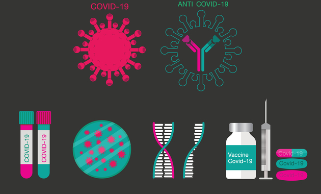

Ever since the COVID-19 pandemic began in 2019, there have been many variants of concern (VOCs) of the SARS-CoV-2 virus — special mention to the delta COVID variant, which has kept the world on edge. Now, in late 2021, a new variant named Omicron (VOC declared by WHO on November 26, 2021) is knocking on the door. There’s a lot unexplored about the possible upcoming COVID-19 wave, but there is one thing we are pretty sure about: Many will be sick if precautions are not taken!
To prepare for the imminent threats of this virus, scientists and researchers are constantly working to develop new treatment strategies. During the second wave of the pandemic, several drugs and therapies, including favipiravir, steroids, ivermectin, and plasma therapy, were used to help improve the symptoms of COVID-positive people. But, with more research and studies, it was seen that not all of these therapies were useful.
Recent advancements show that the newest yet most promising treatment options include monoclonal antibody therapy, antiviral agents, and vaccines.
Let’s quickly review the latest treatment options available to battle these COVID variants and variants of concern!
A. Monoclonal antibodies
During the second wave, researchers worldwide recognized the benefits of a new class of drugs, the monoclonal antibodies. This group of medicines showed promising benefits against the SARS-CoV-2 virus.
When encountered with an infection, the body naturally produces antibodies against the infection-causing pathogen, which help fight the infections.
Using this approach and extensive research, scientists developed monoclonal antibodies that neutralize the disease-causing pathogens by targeting the specific proteins present on their surface. Just like the body’s naturally produced antibodies do!
Summarized below are some of the latest and most promising monoclonal antibodies and their effectiveness against variants of concern such as Delta and Omicron:
1. Casirivimab-imdevimab (Ronapreve): Cipla’s antibody cocktail therapy helps treat mild-to-moderate COVID-19 in adults and children (aged 12 years or more weighing at least 40 kg) who are at high risk of severe COVID-19. Patients aged 65 years or older with certain chronic medical conditions can also receive this medicine [1].
On November 21, 2020, FDA gave emergency use authorization (EUA) to this medicine. India’s Central Drugs Standards Control Organisation (CDSCO) approved this medicine for emergency use on May 3, 2021, making it the first monoclonal antibody to be approved in India.
This antibody cocktail therapy is effective against the Delta, a variant of concern first discovered in India.
Data on the effectiveness of this drug against the Omicron variant is yet to be published, but few initial studies have suggested that the virus can escape its impact [4].
2. Bamlanivimab-etesevimab: This monoclonal antibody drug combination from Eli Lilly is the first and only monoclonal antibody therapy approved for emergency use and post-exposure prophylaxis (prevention) in COVID-19 patients under 12 years of age.
It helps treat mild-to-moderate COVID-19 in people of any age group who are at high risk of severe COVID-19, including hospitalization or death [5].
In 2021, this combination received emergency use authorization from the FDA, and in June 2021, the drug got emergency use approval in India [6].
This antibody cocktail retains neutralization activity against the Delta variant, the predominant variant of concern [7].
So far, this combination has demonstrated reduced efficacy against the Omicron variant, but further results in a large population are still awaited [8].
3. Regdanvimab, CT-P59: This medicine is given to COVID-positive people who do not need supplemental oxygen and are at increased risk of progression to severe COVID-19 [9].
Though approved by the European regulatory agencies, its approval in India is still pending.
This drug was found less effective against certain SARS-CoV-2 variants, including Delta [10].
Moreover, no conclusive evidence regarding its efficacy against omicron is available.
4. Sotrovimab: This drug helps treat acute COVID-19 infection in symptomatic adults and adolescents (aged 12 years or above and weighing at least 40 kg). It is given to people who do not require oxygen supplementation and who are at increased risk of progressing to severe COVID infection.
As per recommendation, sotrovimab should be administered within 5 days of COVID-19 symptoms onset.
Clinical trials for this drug are ongoing in India though regulatory authorities have already approved it in the UK on December 2, 2021 [11].
Due to its unique mechanism of action, it has shown the potential to be effective against multiple variants of concern. Sotrovimab retains activity against all currently tested variants of concern, including, but not limited to, Delta [11].
Based on the sequence of the Omicron variant, sotrovimab is likely to maintain activity and potency against this variant [11]. However, its efficacy is being studied for more accurate details.
5. ZRC-3308: This drug cocktail by Zydus Cadila combines two monoclonal antibodies. In India, clinical trials for this drug are underway.
Current variants of concern can be resistant to treatments focused on the spike protein expressed on the surface of the SARS-CoV-2 virus due to the mutations in this region [12].
B. Antiviral agents
It is a class of medications that helps treat viral infections like COVID-19.
Based on initial research, several antiviral medicines like remedesivir and favipiravir were prescribed for COVID-19 during the second wave of the pandemic.
But since the virus is constantly changing its genetic makeup, older medicines may not prove that effective. Hence, newer drugs with broader impact and better efficacy are required to counter these recent changes.
Here’s a list of some antivirals that have been identified to help treat COVID-19 better and faster.
1. Molnupiravir (Lagevrio): This antiviral medicine from Merck aids in treating mild-to-moderate COVID-19 in adults.
On December 28, 2021, the Drugs Controller General of India (DCGI) approved molnupiravir for the treatment of adult patients with COVID-19 with oxygen levels of more than 93% and who have a high risk of severe COVID disease requiring hospitalization or death [13]. It is also the first oral antiviral approved by the UK regulatory agency [14].
In the latest phase 3 trials data, molnupiravir was found effective in reducing the risk of hospitalization and death in at-risk, unvaccinated adults [14]. Studies have shown that the duration of treatment with molnupiravir is much shorter compared to other therapies which is a significant advantage as it allows you to take only one pill for COVID illness instead of many. As a result, most patients are able to complete their course of treatment [13].
However, it is worth mentioning that the clinical trial was conducted before the Omicron variant was detected, and researchers are yet to understand its impact against the new SAR-CoV-2 mutation [14].
2. Nirmatrelvir plus Ritonavir (Paxlovid): Pfizer’s Paxlovid is the first oral ‘take-home’ treatment of COVID-19 that received emergency approval in the US [15]. However, the drug is not approved in India yet.
It is used to treat mild-to-moderate COVID-19 disease in adults and pediatric patients (aged 12 years or more, weighing at least 40 kg) who are at risk of severe COVID-19. Treatment should start as soon as COVID-19 is confirmed and within 5 days of the symptom onset [16].
It may act as a new tool against the fast-spreading new variant named Omicron [15].
3. 2-DG (2-deoxy-D-glucose): Defence Research and Development Organisation (DRDO) developed this anti-COVID medication for the acute treatment of moderate to severe COVID-19. This medicine is to be given as an adjunct to the existing standard of care treatment to hospitalized moderate to severe COVID-19 patients.
2-DG is the first Indian-origin anti-COVID medicine to receive emergency use approval by the Drugs Controller General of India (DCGI) in India on May 8, 2021 [17].
This medicine stops the virus-infected cells from utilizing the glucose present in the body. As a result, the virus-infected cells die, and the virus fails to replicate. This helps prevent the infection, expediting recovery and reducing dependence on supplemental oxygen.
C. Vaccines
India started vaccinating its population against COVID-19 in January 2021 with Serum Institute’s Covishield and Bharat Biotech’s COVAXIN. Since then, several other vaccines have received authorization from DCGI.
Till December 24, 2021, over 140 crore people have received at least 1 dose of the vaccine, and 68.65% of the Indian population is fully vaccinated against COVID-19 [18].
On December 25, 2021, PM Narendra Modi announced vaccination for children between 15 to 18 years of age [19].
A vaccine contains a weakened or dead form of a pathogen or a part of it. Upon vaccination, your immune system starts producing antibodies against the pathogen without causing illness. Your body now recognizes the pathogen and can fight it off in the future. Vaccines for COVID-19 also work on the same principle.
Booster shots: “Booster” basically refers to an extra dose of a vaccine after the original (or primary) dose is administered. While the initial doses help develop a robust immunity against the pathogen by producing antibodies, booster shots help maintain the immunity levels. It is usually given when the immunity gained through previous doses starts to wane.
Due to the emergence of heavily mutated new SARS-CoV-2 variants (like omicron), on December 25, 2021, PM Narendra Modi announced COVID-19 precautionary doses for the frontline healthcare workers and people aged 60 years or more having comorbidities [19].
1. COVAXIN (Bharat Biotech)
Approved in January 2021, it is a 2-dose vaccine given 28 days apart [20]. It is the first Indian vaccine to get approval for children 2-18 years of age [21].
Booster shot (intranasal): DCGI has approved a phase 3 clinical trial for the intranasal vaccine for COVID-19 to be used as a booster shot [22]. The intranasal vaccine will be administered to those who have already taken both doses of COVAXIN. It is suitable for both children and adults.
The intranasal shots reportedly possess the potential to avert infection with the new variants of SARS-Cov-2, including Omicron.
2. Covishield (Serum Institute of India)
This vaccine got emergency use approval in India on January 6, 2021. It is approved to be used in individuals 18 years of age and older. It is a 2-dose vaccine regimen given 84 days apart [23].
Booster shot: Scientists are trying to evaluate the efficacy of this vaccine against the omicron variant of COVID-19 by growing the virus under laboratory conditions.
3. Johnson and Johnson’s Janssen Vaccine
The U.S. Food and Drug Administration (FDA) authorized this single-dose vaccine for emergency use to prevent COVID-19 in individuals aged 18 years and older [24]. On August 7, 2021, CDSCO granted emergency use authorization (EUA) to this vaccine in India [25].
Booster shot: A European Medicines Agency (EMA) committee issued a positive opinion for using the Janssen COVID-19 vaccine as a booster for adults aged 18 and older.
It is supposed [26] to be given:
– At least two months after primary vaccination with a single shot of the Janssen COVID-19 vaccine, and
– As a ‘mix and match’ booster following primary vaccination with an approved two-shot mRNA COVID-19 vaccine regimen (known as heterologous boosting).
Booster clinical trials are ongoing to look for neutralizing activity against the Omicron variant. Additionally, the manufacturers pursue an Omicron-specific variant vaccine and progress it as needed [27].
4. Moderna
This vaccine has been granted conditional emergency approval in India to be used in adults 18 years or older to prevent COVID-19 [28].
Booster shot: Moderna hopes to start clinical trials early next year on a vaccine to protect against the fast-spreading Omicron variant but for now is focussing on a booster dose of its current vaccine [29].
5. Sputnik
This Russia-produced vaccine that will be produced by Dr. Reddy in India is available as [30]
– two-dose vaccine (Sputnik-V)
– a single-dose (Sputnik-Light) vaccine for adults
– (Sputnik-M) for adolescents between 12 to 17 years
Sputnik-V was the first foreign vaccine approved in India on May 14, 2021 [30]. Sputnik-Light is available in India and is expected to get a DCGI nod as a standalone vaccine and a universal booster. Approval for Sputnik-M is underway in India [30].
Booster shot: On December 17, 2021, the manufacturer claimed that a booster shot of the Sputnik vaccine provides a more robust antibody response against the Omicron variant of COVID-19 [31].
6. Zydus Cadila’s ZyCoV-D
In India, this vaccine got emergency use approval on July 1, 2021. It is safe for adults and children aged 12 to 18 years. It is a needle-free, three-dose vaccine given on day zero, day 28th, and day 56th [32].
Booster shot: This vaccine is based on new technology (plug-and-play), allowing easy tweaking to protect against the mutated virus strains. Hence, the manufacturer is currently closely monitoring the global data on omicron and may easily tweak the vaccine if the situation demands it [33].
On December 28, 2021, two more vaccines got authorized by the Drug Controller General of India (DCGI) for COVID-19:
7. COVOVAX: Serum Institute of India and Novavax’s COVID-19 vaccine received emergency use authorization. It is India’s first protein-based vaccine. This vaccine will be given in two doses and will help induce immunity against SARS-CoV-2 to prevent COVID-19 in adults aged 18 years and above [34].
8. CORBEVAX: Biological E’s Corbevax which is India’s first indigenously developed protein sub-unit vaccine. This kind of vaccine contains a part of the SARS-CoV-2 virus’s surface called the spike protein. Essentially, the spike protein is that part of the virus which allows it to penetrate your body’s cells [35].
Corbevax was found to be more than 80% effective against symptomatic infections caused due to the Delta variant [35].
Take home:
Undoubtedly much research on coronaviruses has been conducted, and various treatment strategies have been developed. However, with the changing pattern of this virus, these treatment strategies, including monoclonal antibody therapy, vaccines, and antiviral treatments, may too see frequent updates to fight against the latest emerging variants of coronaviruses. As individuals, our immediate focus should be to arrest the spread of COVID-19 infection by adopting appropriate infection control measures like wearing masks, washing hands frequently, getting vaccinated, and avoiding crowded spaces.
*Disclaimer: This content is for informational purposes only and does not replace a qualified doctor’s advice. This content must not be considered as a substitute to any of the Government of India’s Guidelines on COVID-19 around similar and/or dissimilar context(s). The sole purpose of this content is to help our readers better understand their health and their diagnosed medical problems. 1mg encourages all the readers to always consult a doctor before the intake of any medicine.
(The article is written by Dr. Lipika Khurana, Medical Writer and reviewed by Dr. Varun Gupta, MBBS, MD (Pharmacology))
Links to all e-books: https://www.1mg.com/coronavirus-covid19
Recommended Reads
Medicines For COVID-19: A Step By Step Approach
How To Stay Healthy During COVID-19 Outbreak?
References
1. Coronavirus (COVID-19) Update: FDA Authorizes Monoclonal Antibodies for Treatment of COVID-19. FDA. https://www.fda.gov/news-events/press-announcements/coronavirus-covid-19-update-fda-authorizes-monoclonal-antibodies-treatment-covid-19
2. Roche receives Emergency Use Authorisation in India for its investigational Antibody Cocktail (Casirivimab and Imdevimab) used in the treatment of Covid-19. Cipla. https://www.cipla.com/press-releases-statements/roche-receives-EUA-India-investigational-antibody-cocktail-casirivimab-Imdevimab-covid
3. ANI’s status update “Dr Naresh Trehan, Chairman, Medanta on COVID antibody cocktail”. Twitter. https://twitter.com/ani/status/1397485733217067009
4. Reduced Neutralization of SARS-CoV-2 Omicron Variant by Vaccine Sera and Monoclonal Antibodies | medRxiv.https://www.medrxiv.org/content/10.1101/2021.12.07.21267432v2
5. FDA authorizes bamlanivimab and etesevimab monoclonal antibody therapy for post-exposure prophylaxis (prevention) for COVID-19 | FDA https://www.fda.gov/drugs/drug-safety-and-availability/fda-authorizes-bamlanivimab-and-etesevimab-monoclonal-antibody-therapy-post-exposure-prophylaxis
6. Eli Lilly gets Indian emergency use nod for COVID-19 antibody drug combination. Reuters. https://www.reuters.com/world/india/eli-lilly-gets-indian-emergency-use-nod-antibody-drug-combination-2021-06-01/
7. Lilly’s bamlanivimab with etesevimab authorized as the first and only neutralizing antibody therapy for emergency use in COVID-19 patients under the age of 12 | Eli Lilly and Company https://investor.lilly.com/news-releases/news-release-details/lillys-bamlanivimab-etesevimab-authorized-first-and-only#:~:text=Bamlanivimab%20and%20etesevimab%2C%20when%20administered,etesevimab%20retain%20neutralization%20activity%20against
8. The dual function monoclonal antibodies VIR-7831 and VIR-7832 demonstrate potent in vitro and in vivo activity against SARS-CoV-2 | bioRxiv https://www.biorxiv.org/content/10.1101/2021.03.09.434607v10
9. Celltrion’s Monoclonal Antibody Treatment regdanvimab, Approved by the European Commission for the Treatment of COVID-19 https://www.celltrionhealthcare.com/en-us/board/newsdetail?modify_key=539
10. Dong-Kyun, Ryu Bobin Kang, Hanmi Noh, et al. The in vitro and in vivo efficacy of CT-P59 against Gamma, Delta and its associated variants of SARS-CoV-2. Biochem Biophys Res Commun 2021 Nov 12;578:91-96. https://www.sciencedirect.com/science/article/pii/S0006291X21013176?via%3Dihub
11. MHRA grants conditional marketing authorisation1 for COVID-19 treatment Xevudy (sotrovimab) | GSK https://www.gsk.com/en-gb/media/press-releases/mhra-grants-conditional-marketing-authorisation1-for-covid-19-treatment-xevudy-sotrovimab/
12. Zydus seeks DCGI approval to undertake clinical trials for monoclonal antibodies cocktail that can neutralise COVID infection https://www.zyduscadila.com/public/pdf/pressrelease/Zydus-seeks-DCGI-approval-to-undertake-clinical-trials-for-monoclonal-antibodies-cocktail-that-can-neutralise-COVID-infection.pdf
13. Sun Pharma receives DCGI approval for Molxvir® (Molnupiravir) in India https://sunpharma.com/wp-content/uploads/2021/12/Press-Release-Sun-Pharma-receives-DCGI-approval-for-Molxvir-Molnupiravir-in-India.pdf
14. Sun Pharma geared to introduce Molnupiravir, licensed from MSD and Ridgeback, under the brand name Molxvir® in India https://sunpharma.com/wp-content/uploads/2021/11/Press-Release-Sun-Pharma-gearing-up-to-introduce-molnupiravir-under-the-brand-name-Molxvir%C2%AE-in-India.pdf
15. US authorizes Pfizer oral COVID-19 treatment, first for at-home use | Reuters https://www.reuters.com/business/healthcare-pharmaceuticals/pfizer-oral-covid-19-pill-gets-us-authorization-at-home-use-2021-12-22/
16. Coronavirus (COVID-19) Update: FDA Authorizes First Oral Antiviral for Treatment of COVID-19 | FDA https://www.fda.gov/news-events/press-announcements/coronavirus-covid-19-update-fda-authorizes-first-oral-antiviral-treatment-covid-19
17. DCGI approves anti-COVID drug developed by DRDO for emergency use. Press Bureau of India (PIB). https://pib.gov.in/PressReleasePage.aspx?PRID=1717007
18. CoWIN Dashboard. CoWIN. https://www.cowin.gov.in/
19. PM Modi’s address to the Nation | 25th December 2021 | PMO. Youtube. https://www.youtube.com/watch?v=mBEU3GPDt7w
20. COVAXIN – India’s First Indigenous Covid-19 Vaccine | Bharat Biotech https://www.bharatbiotech.com/covaxin.html
21. India Today “Dr. Naresh Trehan, Chairman, Medanta on COVID vaccine for Kids”. Twitter. https://twitter.com/IndiaToday/status/1447832298183749633?ref_src=twsrc%5Etfw%7Ctwcamp%5Etweetembed%7Ctwterm%5E1447832298183749633%7Ctwgr%5E%7Ctwcon%5Es1_&ref_url=https%3A%2F%2Fwww.indiatoday.in%2Fcoronavirus-outbreak%2Fstory%2f Vaxin-gets-emergency-approval-kids-2-18-years-1863866-2021-10-12
22. Bharat Biotech seeks trial for intranasal COVID-19 vaccine booster | Reuters https://www.reuters.com/markets/funds/bharat-biotech-seeks-trial-intranasal-covid-19-vaccine-booster-ani-2021-12-20/
23. Serum Institute of India obtains emergency use authorisation in India for AstraZeneca’s COVID-19 vaccine https://www.astrazeneca.com/media-centre/press-releases/2021/serum-institute-of-india-obtains-emergency-use-authorisation-in-india-for-astrazenecas-covid-19-vaccine.html
24. Johnson & Johnson COVID-19 Vaccine Authorized by US FDA For Emergency Use | Johnson & Johnson https://www.jnj.com/johnson-johnson-covid-19-vaccine-authorized-by-u-s-fda-for-emergency-usefirst-single-shot-vaccine-in-fight-against-global-pandemic
25. India gets 5th Covid-19 vaccine as Johnson & Johnson’s candidate gets approval | Latest News India. Hindustan Times. https://www.hindustantimes.com/india-news/india-gets-5th-covid-19-vaccine-as-johnson-johnson-s-candidate-gets-approval-101628323218504.html
26. Johnson & Johnson Announces Positive CHMP Opinion for a Booster Shot of its COVID-19 Vaccine | Johnson & Johnson https://www.jnj.com/johnson-johnson-announces-positive-chmp-opinion-for-a-booster-shot-of-its-covid-19-vaccine
27. Johnson & Johnson to Evaluate Its COVID-19 Vaccine Against New Omicron COVID-19 Variant | Johnson & Johnson https://www.jnj.com/johnson-johnson-to-evaluate-its-covid-19-vaccine-against-new-omicron-covid-19-variant
28. India authorises Moderna’s Covid-19 vaccine for emergency use https://www.pharmaceutical-technology.com/news/india-authorises-moderna-vaccine/
29. Moderna could be ready to develop Omicron booster in weeks – CEO | Reuters https://www.reuters.com/business/healthcare-pharmaceuticals/moderna-could-be-ready-develop-omicron-booster-weeks-ceo-2021-12-21/
30. Sputnik M, the latest vaccine for adolescents – The Hindu BusinessLine. https://www.thehindubusinessline.com/news/national/sputnik-m-the-latest-vaccine-for-adolescents/article37887840.ece
31. Sputnik V booster strengthens Omicron defence, developer says | Reuters https://www.reuters.com/business/healthcare-pharmaceuticals/sputnik-v-shot-induces-neutralising-antibody-response-omicron-variant-russia-2021-12-17/
32. Zydus receives EUA from DCGI for ZyCoV-D, the only needle-free COVID vaccine in the world https://www.zyduscadila.com/public/pdf/Press-Release-Zydus-receives-EUA-from-DCGI-for-ZyCoV-D.pdf
33. Are Indian vaccines effective against Omicron? Here’s what manufacturers say. NewsBytes. https://www.newsbytesapp.com/news/india/covid-19-vaccines-covishield-covaxin-efficacy-against-omicron-variant/story
34. Serum Institute of India and Novavax Receive Emergency Use Authorization in India for COVOVAX https://www.seruminstitute.com/SII_Pressrelease_COVOVAX_EUA_in_India.pdf
35. Biological E Ltd || News https://www.biologicale.com/news.html